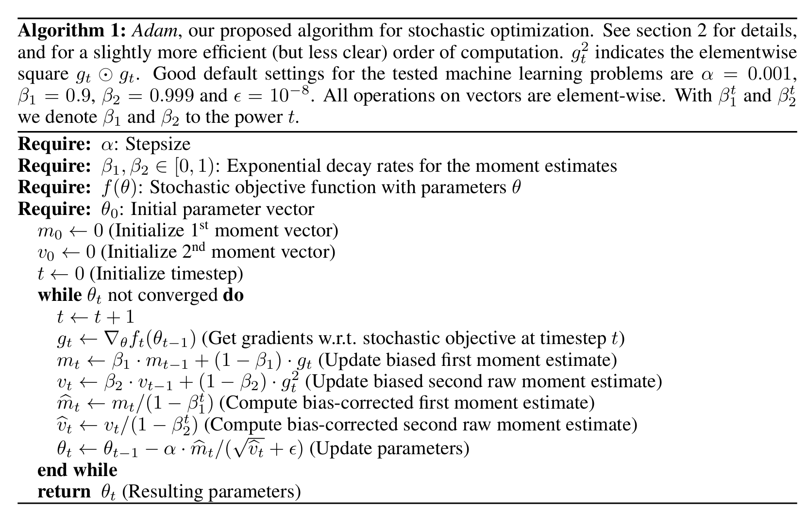
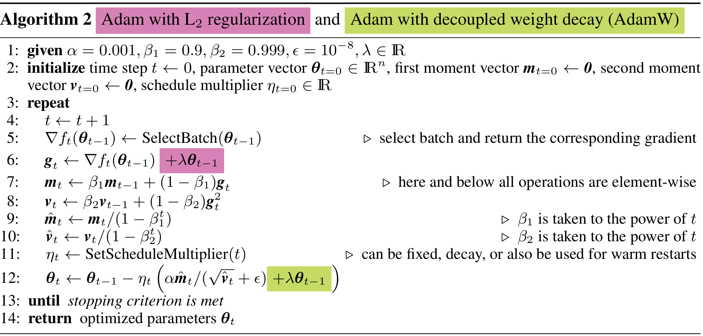

优化器：从SGD到Adam到AdamW
1. SGD
随机梯度下降（stochastic gradient descent，SGD）
输入数据为(x, y)组成的pair，模型参数是\(W\)，随机选择一批样本组成一个batch，输入模型计算loss：\(L=f(X, Y;W)\)，并求出梯度，更新参数时：
\(W=W-lr*\frac{\partial L}{\partial W}\)
这就是随机梯度下降。
2. Adam
本段参考视频：https://www.bilibili.com/video/BV1NZ421s75D 建议观看视频，更好的理解Adam算法。
我们从Adam论文中抽取一张图片来解释

一句话概括：用之前的每一步的梯度代替当前步的梯度。举个不那么准确的例子，假如当前是第5步，前5步的梯度分别是\(g_1, g_2, g_3, g_4, g_5\)，那么更新参数时，我们不用\(g_5\)，而是\(g=0.1g_1+0.15g_2+0.2g_3+0.25g_4+0.3g_5\)来作为第5步的梯度。当然，这个只是一个非常粗浅的比喻，实际上融合的方法不是这么简单的加权求和。
接下来详细来说明一下，首先说明算法中各个符号的定义
\(f(\theta)\): 给定参数\(\theta\)时的损失函数，\(m_0=0\)：一阶矩的初始值，\(v_0=0\):二阶矩的初始值，\(t\): 当前的step，\(alpha\)：学习率，\(\beta_1,
\beta_2\)：两个超参数，一般取值是(0.9,
0.99)。算法主要集中在while ... end while这个循环中，一步一步说明一下：
\(t=t+1\)：有手就能理解
\(g_t\leftarrow\nabla_\theta f_t(\theta_{t-1})\)：用前一步的参数计算损失函数并求梯度
\(m_t\leftarrow\beta_1 \cdot m_{t-1}+(1-\beta_1)\cdot g_t\)：使用之前的指数加权平均值和当前步的梯度计算当前步的指数加权平均值，得到一阶的估计量\(m_t\)，我们希望\(m_t \approx g_t\)，但是实际上这个数值并不能约等于，差别比较大，所以后面会校正一下，就会比较准确
\(v_t\leftarrow\beta_2 \cdot v_{t-1}+(1-\beta_2)\cdot g_t^2\)：同上，计算梯度的平方的指数加权平均估计值，后面也会校正一下
\(\hat {m_t} \leftarrow m_t/(1-\beta_1^t)\)：校正一下\(m_t\)，当t比较小时这个估计值\(m_t\)和实际值\(g_t\)差异比较大，校正后就差异很小了，也就是这里可以真正认为\(\hat{m_t}\approx g_t\)
\(\hat {v_t} \leftarrow v_t/(1-\beta_2^t)\)：校正一下\(v_t\)，当t比较小时这个估计值\(v_t\)和实际值\(g_t^2\)差异比较大，校正后就差异很小了
\(\theta_t\leftarrow\theta_{t-1}-\alpha\cdot\hat{m_t}/(\sqrt{\hat{v_t}}+\epsilon)\)：更新参数，但是梯度是用一阶估计 / 二阶估计的算数平方根
好，至此，adam介绍结束。
3. AdamW
原论文：Decoupled Weight Decay Regularization
本段参考博客：https://www.fast.ai/posts/2018-07-02-adam-weight-decay.html
英语不好的人建议阅读原博客，正好练习一下你的英语。
AdamW = Adam + Weight decay
这么简单为什么还能是一篇论文呢？原因是，大家通常都会把\(L_2\)正则化和weight decay混为一谈，实现\(L_2\)正则化时并不会真的去在损失函数上加一项，而是计算完梯度后给梯度加上weight decay。Adam刚出时，大家实现的Adam with weight decay也是计算完梯度后对梯度进行weight decay，也就是：
\(g_t\leftarrow\nabla_\theta f_t(\theta_{t-1})+\color{red}{\lambda *\theta_{t-1}}\)
AdamW认为，这是\(L_2\)正则化，但不是weight decay，因为给梯度加入的\(\color{red}{\lambda\theta_{t-1}}\)在后续经过指数加权平均，已经不是weight decay了，weight decay应该是
\(\theta_t\leftarrow\theta_{t-1}-\alpha\cdot(\hat{m_t}/(\sqrt{\hat{v_t}}+\epsilon)\color{red}{+\lambda \theta_{t-1}})\)
再来引用AdamW论文的一张图清晰看一下
